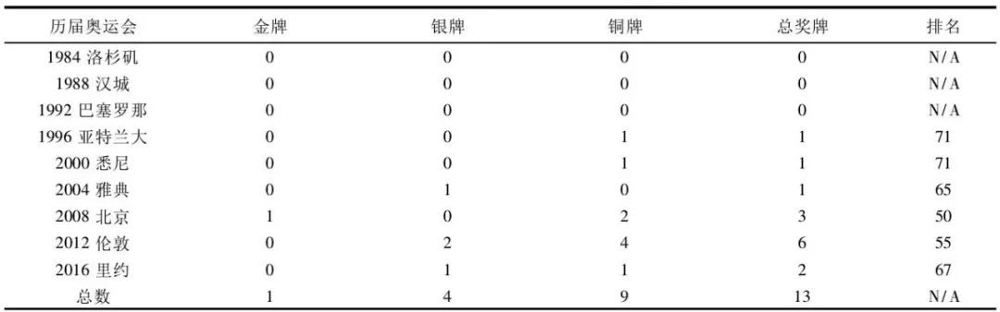

收录于合集

导 读
欢乐奥运季, 印度独忧伤。作为近拥14亿人口，GDP总量排名全球前10的大国印度，为何在竞技体育方面表现如此之差？30年来印度在奥运会上获得的奖牌屈指可数，这显然是与其国家体量而言是极不相称的。 印度 作为一个拥有“大国情怀”和“民族自尊心”的国家，为何甘愿在如此重要的世界舞台中沦为“弱国”,成为了我们的困惑。 南京师范大学体育科学学院的张剑威与汤卫东曾在2016年里约奥运会结束之际对这一现象进行了剖析，认为 印度“奥运奖牌荒”现象的背后与自身的前工业化社会、政治意愿、宗教文化（“禁欲”与种姓制度）等因素有着密切的关系。
1 问题的提出欢乐奥运季, 印度独忧伤。2016里约奥运会结束之际, 印度只收获一银一铜两块奖牌。和中国同为金砖五国, 一方面,
印度的综合实力在世界上不可小觑, 在世界各国GDP总量排名中, 印度稳居第11位, 但在奥运会奖牌榜上, 和中国、俄罗斯动辄获得两位数金牌、三位数奖牌相比,
拥有12亿人口的印度却少有人问鼎金牌, 在竞技体育建树方面尤其薄弱,
印度近期在奥运会上表现最好的一次才是排名世界第50名。这个近些年处处拿来与中国相提并论的南亚国家, 在里约以及历届奥运会上的表现,
与其作为一个坐拥13亿人口的发展中国家来说, 却是极不相称的。里约奥运期间,
印度国内媒体的体育新闻头条更是整日都被“失望”“垃圾”“耻辱”等字眼所充斥。当今世界, 奥运会身为一项精彩绝伦的体育赛事呈现在人们面前,
更是作为一个各国政治、经济、科技和文化等的载体和窗口, 是展示国家竞技水平、综合实力与国民素质的最佳舞台。在舆论背后, 人口大国印度为何难以成为奥运大国,
只能屈身奥运小国之列, 这对于一个有着浓重的“大国情结”和民族自尊心极强的国家来说, 一直是个相当敏感的话题。里约奥运已经落下帷幕,
此次奥运会再次引起了全世界的关注, 印度代表团在本届奥运会上获得1银1铜的“惨状”引起作者的思考, 究其原因, 印度竞技体育何去何从, 值得国人深思。
2 印度在历届奥运会上表现情况回顾印度近年来在经济上快速增长的势头令世界瞩目, 但印度在历届奥运会上表现可并非那么夺人眼球。作为英联邦成员国之一,
印度早在1900年就参加了在巴黎举办的第二届夏季奥林匹克奥运会, 是第一个参加夏季奥林匹克运动会的亚洲参赛国。早年, 印度男子曲棍球队在国际赛场上所向披靡,
1928至1980年的十二届奥运会中 (1940和1944年由于二战爆发奥运会停办) , 在这个单项上囊获了8金2铜1银, 共计11块奖牌,
其余项目奖牌争夺上均未有收获;1984年后, 印度曲棍球队再未赢得过奖牌, 在其他项目奖牌争夺上又鲜有所长, 印度在之后奥运会上的表现一蹶不振。 2.1
近三十年来取得的奖牌屈指可数翻开印度在近30年奥运会上的表现, 也许我们会有所感触。从1984年洛杉矶奥运会到1992年巴塞罗那奥运会,
印度代表团连续三届颗粒无收, 奖牌数均为零;在1996年亚特兰大奥运会上有所突破, 取得了1枚铜牌;2000年悉尼印度成绩稳定,
依旧是1枚铜牌;2004年悉尼稍有进展, 获得1枚银牌;2008年对于印度来说是奥运大年, 那年8月11日, 印度射击运动员阿比纳夫·宾德拉Abhinav
Bindra在北京奥运会10米气步枪比赛上, 为印度赢得了自其参加奥运会108年历史上首枚单项比赛个人金牌,
此外还有两枚铜牌入账;2012年印度整体有所进步, 获得2枚银牌和4枚铜牌, 奖牌数量为历届最高;2016年里约, 印度离金牌之路越来越远,
只拿到1银1铜两块奖牌 (详见表1) 。

表1 1984~2016年印度在历届奥运中的奖牌情况一览表 **** 2.2
参赛的优势项目有限印度历来不是体育强国, 体育文化为外来文化, 印度保守特质的宗教文化抑制了其体育项目多样性的健康发展。在印度国内, 体育发展十分不畅,
可供开发、普及的运动项目更是有限。这方面, 不少印度民众对奥运会的项目怨言颇深:除了曲棍球, 印度人的强势项目都不在奥运会项目中,
尤其是板球。在强手如林的奥运会赛场上, 印度传统优势项目主要来自于曲棍球、射击和摔跤这几项。本届里约奥运会共有大项28个项目, 印度只参加了其中15个项目,
而其中一半项目印度从未得到过奖牌。纵观印度整个奥运会历史, 印度国家队总共赢得过24枚奖牌。分别在7个项目上获得:羽毛球 (1枚) 、拳击 (2枚)
、曲棍球 (11枚) 、射击 (4枚) 、网球 (1枚) 、举重 (1枚) 、摔跤 (4枚)
;印度尚未取得过奖牌的21个项目:手球、田径、排球、垒球、篮球、足球、皮划艇、自行车、射箭、击剑、体操、柔道、乒乓球、水上项目、现代五项、棒球、马术、跆拳道、铁人三项、帆船帆板和赛艇。
2.3 人均金牌产出与强国相距甚大毋庸讳言, 印度在最近几届奥运会上的糟糕表现, 排名只能与卡塔尔和摩洛哥这样的小国并驾齐驱。回顾历史,
印度1900年第一次参与巴黎奥运会以来, 共赢得9金6银11铜, 总计26枚奖牌,
这样的总奖牌数甚至远远不及中国在一届奥运会上所获得的奖牌数。也有媒体戏称, 世界游泳名将菲尔普斯一人在奥运会上所获得的奖牌 (23金3银2铜)
都比印度自1900年以来获得的全部奖牌总数多。2016年里约奥运会, 共有207个参赛国家及地区, 如果按得每块金牌所需要的人口数
(也就是说多少人分一块金牌) , 或是人均金牌数来表达一个国家真实体育竞技水平的话, 印度在这份榜单中更是难寻踪迹。参照本届奥运会奖牌榜,
印度约12.27亿的人口, 差不多6亿人口才能产出一枚奖牌, 而中国在本届奥运会上斩获70枚奖牌, 人口数约13亿, 1800万人就能对应一枚奥运奖牌,
人均金牌1/1800万块;美国在里约获得121枚奖牌, 人口数约3.2亿, 平均260万人分一块奖牌,
人均金牌1/260万块;牙买加、格林纳达这些国家更是平均几十万人就能拿到一枚奖牌。除此之外,
已经参与了总计达28届夏季奥林匹克运动会的印度在每届奥运会平均可以获得0.9枚奖牌,
而庞大的人口则让印度代表队在每届奥运会人均奖牌数榜单上均排名垫底。近些年, 在经济发展上取得奇迹的印度, 在发展竞技体育方面却乏善可陈,
多年来困扰印度体育发展的“奥运困境”始终破解无门。 3 印度“奖牌荒”背后以及竞技体育落后原因探析 3.1
前工业化社会缺乏体育发展基础表面上看, 印度人口众多、增长快, 为选拔运动员提供了一个数量庞大的人口基础。但是, 印度的农业人口占总人口数的70%,
多数仍居住在缺水少电、交通闭塞的农村, 民众文化水平普遍不高, 文盲现象严重。近些年, 印度全国范围内的扫盲率虽呈上升趋势,
但文盲绝对人数却有增无减[2], 试想, 一个正在将扫盲教育列为重点工作的国家又怎么能让体育高效、健康发展。因此,
印度人口基数的绝对优势根本不能在优秀运动员的选拔上体现出来。处于前工业时期的印度, 政府还在重点扶持农业发展, 着力解决国民贫困和基础设施落后等问题,
既无法依靠社会力量自发形成“市场体育”, 又没法调动行政资源开展“计划体育”, 只能寄希望于少数精英运动员,
集国家有限体育资源着重发展其自身传统优势项目或天赋项目。根据联合国2013年《人类发展报告》显示, 印度儿童不足标准体重的人数比例达42.5%,
营养不良问题凸显。国际粮食政策研究室《全球饥饿指数报告2012》统计, 印度粮食问题严重程度名列全球第十五位[3], 印度缺乏现代农业, 粮食供给无法保证,
很多国民还在为温饱问题发愁, 国家大力发展体育无从谈起。相比于中国, 印度是一个典型的西方资本主义联邦制共和国, 政府执政能力低下、对体育的投入非常有限,
“市场体育”无从谈起, “计划体育”难以实施,
更没法调动行政资源开展中国式的“举国体制”或是建立类似前东欧和前苏联的全国竞技体育促进模式。印度社会体育经费紧缺的形势、全国基础设施落后的状况以及硬件上的前工业化时代特征、导致了印度体育在低水平上徘徊、缺乏体育发展基础的现实困境。
**3.2 缺少成为体育强国的“政治意愿”**法国利摩日大学体育经济研究中心布尔格教授曾指出,
任何一个欲获得奥运会奖牌的运动员都应该具备以下三个条件之一:要么来自一个人口大国;要么来自人均国内产值较高的国家;要么来自政府具有成为体育强国的强烈政治意愿的国家[4]。而在印度,
成为“体育大国”从来都不是政府的“既定国策”。印度首都新德里最大的体育场是纪念其开国总理贾瓦哈拉尔·尼赫鲁建成并由其名字命名的。尼赫鲁在任期间,
科技和教育列为印度当时发展的首要任务, 印度历届政府的最高领导人都亲自过问或者领导过尖端科技的开发工作, 在这种思想下,
印度政府于1958年、1968年相继颁布《科学政策决议》《国家教育政策》全面规划国家的科技教育发展战略,
“用现代科学技术和教育将印度带入21世纪”[5]。不过, 发展体育运动在尼赫鲁和曼莫汉·辛格政府关于印度的远景规划中几乎不占任何地位,
期间几乎没有形成任何涉及体育的投入和资助机制。受尼赫鲁思想的影响, 印度历届政府也从未把成为体育大国列入工作议程。直到2002年12月,
印度国家计划委员会颁布《印度2020年远景规划》 (或称《印度2020年愿景》) , 其中才有涉及体育发展的战略规划,
文件就印度经济、教育、体育和基础设施等方面的发展目标提出了一些新要求。另一方面, 相对于在军事、科技领域的慷慨,
印度政府对体育发展的投入则显得吝啬不已、囊中羞涩。2004年, 在印度国大党政府上台后公布的第一个预算案中, 体育拨款只有区区0.38亿卢比,
仅占教育拨款的3%。时任体育部长苏尼尔对此表示不满,
指责印度财政部长长奇达姆巴拉姆对体育拨款的吝啬以及学术界对体育部门的偏见[6]。而在印度2007~2008年度财政预算案中, 体育拨款为49亿卢比
(按当时汇率相当于人民币10亿元) , 教育经费拨款达2867亿卢比;考虑到2010年将在新德里举办第17届英联邦运动会
(印度代表团喜获38金、27银、36铜, 位于奖牌榜第二位) , 印度在2008~2009年度预算中体育拨款增至110亿卢比,
但教育经费预算高达3440亿卢比。从近几年政府在各类经费的支出看, 印度花费大量公共资金用于公共教育经费,
期间公共教育经费占财政总预算的比例多保持在4%以上, 而体育经费所占的比例通常不超过0.1%, 这也与印度自1986年起依照《新教育政策》所制定的指导思想,
全面开展“重脑力轻体力”的教育改革运动战略有关[7]。一个国家竞技体育要想迅速高效地发展,
一方面是要依托社会环境的改善和国民健康意识的提高来带动国民自身积极参与体育之中, 另一方面也要依托于国家政策法规的全力支持。而在印度,
发展体育大国似乎从来没有被纳入政府工作的议程, 这也已经成为制约印度体育发展的重要因素。印度奥委会就不参与“申奥”一事, 答国外记者问中也承认,
国家没有一直支持体育运动。与之形成对比的是日本, 1988年兵败汉城奥运会后的日本政府介入体育界的力度明显加大,
1989年日本文部省颁布了《关于面向21世纪的体育振兴策略》, 提出了从竞技体育和终身体育两个方面大力发展体育的方针,
之后更是制定了一系列详细的短、中、长期的强化选手计划。政府还投资建设了日本国家体育科研中心 (JISS) ,
为日本选手在奥运会夺取奖牌提供科研、训练等全方位的服务[8]。经过短短十几年, 日本政府一系列的举措在2004年雅典奥运会上便获得成效,
那届奥运会日本代表团共获金牌16枚、银牌9枚、铜牌12枚, 奖牌总计37枚, 跃居至金牌榜第五位, 在短短数年内便实现了竞技体育的崛起。 3.3
印度宗教文化的保守特质抑制体育发展 3.3.1 根植于印度教育中的“禁欲(Brahmacharin) ”观念纵览近3500年的印度教育史,
印度教育源自《梨俱吠陀》 (RigVeda) , 宗教奠定了印度教育的基础, 对教育的要求局限于静态社会的基本需求[9]。印度教育伴随着宗教而来,
印度属于印度教文化圈, 80%以上的印度人信奉印度教, 而印度教内“禁欲(Brahmacharin) ”观念以及唯宿命论规定人的一生应安分守己,
不要企图改变命定的人生和命运进行武力的抗争, 即使是20世纪50年代印度从英国的殖民统治下取得独立也是采用和平方式,
这与竞技体育崇尚个人拼搏、勇于斗争的意志品质大相径庭。另一方面, 印度传统文化是以印度教文化为主体,
以印度各宗教文化为核心价值取向标准的多文化综合体系。印度文化的宗教性强调对精神世界的追求、注重内心宁静,
而非外在的物质追求。印度教育近代以来的发展道路是渐进性的, 传统教育中的“禁欲 (Brahmacharin)”观念很大程度上被保留了下来,
也导致他们对外来体育文化所展现的特质难以相互适应。宗教理念渗透于印度生活的方方面面、贯穿于人们行动与心灵之中,
传统与保守特质尤为明显。过于保守的特质与对内心世界的安宁追求使得印度人在对待外在于自身文化完全不同的体育文化时会表现出不适的症状[10]。
3.3.2 种姓制度阻碍印度体育发展
种姓制度形成于3000多年前, 是印度社会特有的特征, 也可以说是一种等级制度, 主要存在于印度教中, 对伊斯兰教和锡克教也有不同程度的影响。在这种制度中, 每个种姓集团都占据一定的社会位置[11], 最高种姓是婆罗门 (Brahmans) , 地位最低的则是那些从事清洁工作的贱民。1947年, 印度种姓制度废除, 宪法明确规定取消种姓歧视和不可接触制, 但是数千年来形成的传统依然在印度社会盛行不衰。受种姓歧视影响, 在印度人们的观念中, 体力活动是极其卑微下贱的。任何有地位 (无论是因种姓划分形成地位, 还是因积累金钱形成地位) 的人都不应该自己动手, 而是应该把体力活动交给下层阶级的穷人。跑、跳、游泳等体育活动在上层阶级眼里虽算不上“下贱”, 但也只被婆罗门视为供消遣娱乐的“嬉戏游戏”。在印度, 种姓规范与体育运动有着很大程度的契合:1) 一个天天吃肉、在运动场挥汗如雨的婆罗门一定不是一个合格的婆罗门;2) 印度的中上阶层受种姓规范的束缚没有进行体育运动的意愿;3) 很多新兴的中产阶级即使不是出生婆罗门也远离体育活动;4) 种姓制度导致不同姓氏的人们不能在一起运动。现实情况是, 一个婆罗门出生的运动员很少会主动同一个贱民出生的运动员接触, “高等种姓”的运动员常常拒绝与“下等种姓”的运动员在一起训练和比赛。然而, 正是这样一个远离体育运动、和现代体育要求格格不入背道而驰的阶层却构成了当今印度上层社会的主体, 婆罗门作为最高种姓所遵循的体育观影响了印度整个社会的体育风气, “下等种姓”的运动员甚至都不敢追求在体育上有更高层次的突破。可以这么说, 种姓制度是印度实现体育崛起的根本障碍。印度有史以来许多领导人都公开抨击过这一制度, 另一方面, 他们又肯定了种姓制度对稳固社会平稳安定的积极作用。印度开国总理贾瓦哈拉尔·尼赫鲁曾指明:“在印度人们保持着种姓制的条件下, 印度终归是印度。”但是从他们与这个制度脱离关系的那一天起, 印度就不复存在了[12]。所以, 与其说, 印度人不重视体育、不发展体育, 还不如说是, 印度最劣性的种姓等级制度一直以来都未得到过根治。 4 结语和中国相比, 印度在历届奥运会赛事上取得的成绩可谓乏善可陈。近些年, 印度政府正在努力“让印度体育走向世界”, 加大体育基础设施的建设, 并且大幅提高体育竞赛奖励数额, 刺激竞技体育的发展, 其中奥运会冠军奖金更是达1000万卢比。印度并不是一个没有体育的国家, 它缺少的只是体育文化, 民众极为有限的参与, 才是印度体育落后的根源。由此可见, 印度若想从根本上发展发展竞技体育, 除了要在政策上继续加强对硬件和软件的投资、加大奖励力度等措施之外, 最主要的还是要根本上转变印度民众轻视体力活动的传统观念, 卸下印度宗教带给竞技体育发展的枷锁, 设计出着眼于未来奥运的全面发展战略, 同时对现行的体育制度进行改革, 转变竞技体育发展方式。犹如大象迈步, 印度在发展竞技体育的道路上任重而道远, 这是一个漫长的过程, 不可能一蹴而就。期待印度竞技体育能迎来崭新的发展。（作者单位：南京师范大学体育科学学院 来源：《南京体育学院学报（自然科学版）》2017年第2期，内容有删减）
排版 | 国小政